Characters
Selectable characters, or "Legends" play a very important role in the gameplay of Apex Legends.
There are 19 different Legends to choose from. Ranging from Assault to Recon and everything in between.
Each one with different abilities, a different playstyle, and different uses. You can only choose one
for yourself at the beginning of every game, so you need to choose wisely.
The different class groups are...
Offensive, with Wraith, bangalore, Mirage, Octane, Revenant, Horizon, Fuse and Ash.
There are Defensive, with Gibraltar, caustic, Wattson and Rampart.
There are also Support Legends, like Lifeline and Loba.
Finally there are the Recon Legends, with some of my personal favourites, Pathfinder, Bloodhound, Crypto, Valkyrie and Seer.
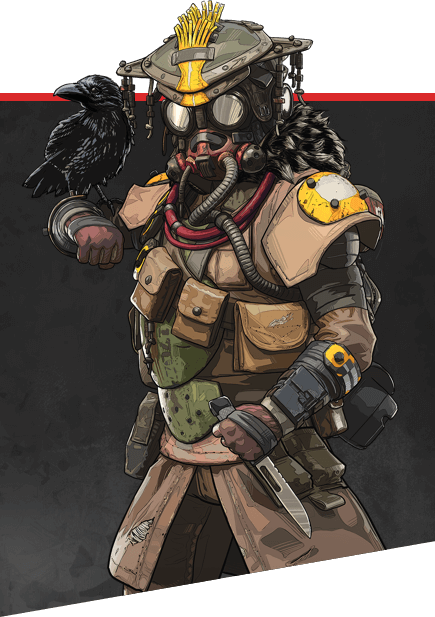
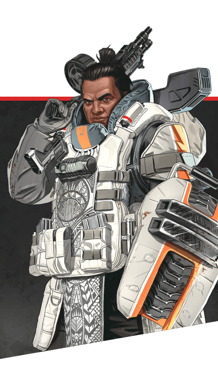
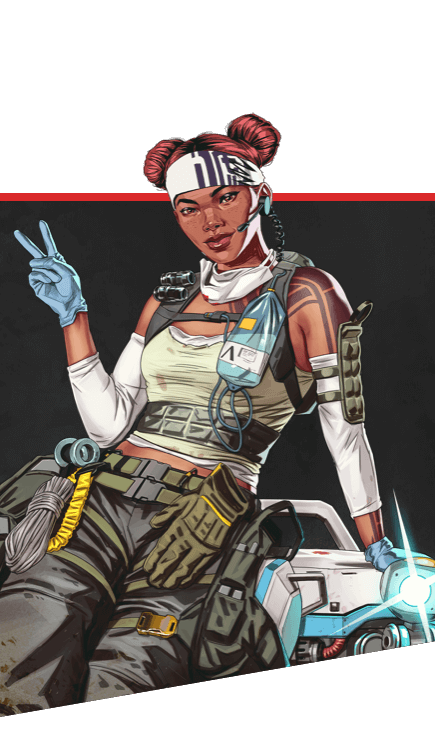
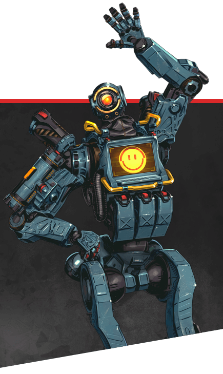
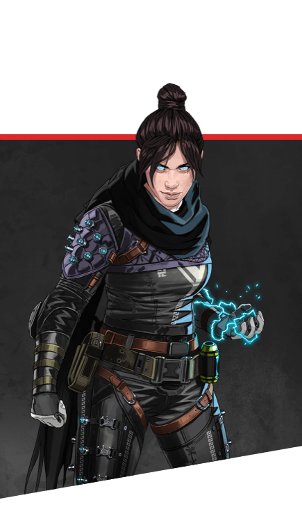
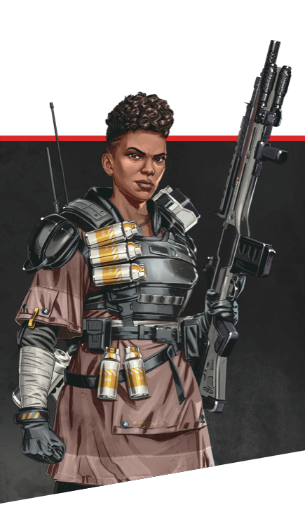
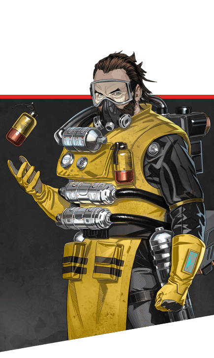
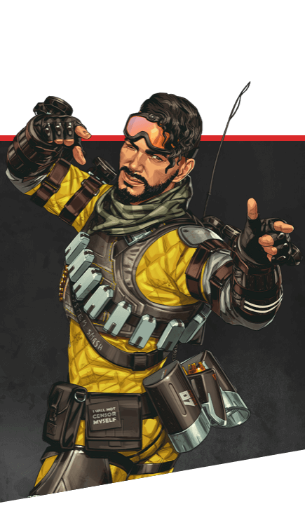
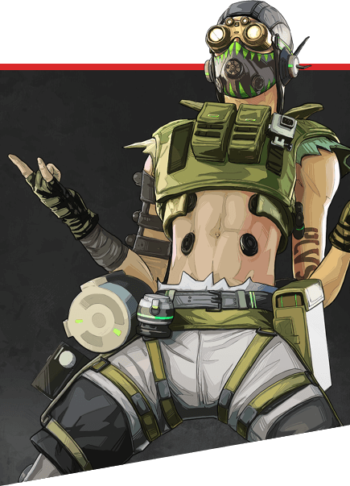
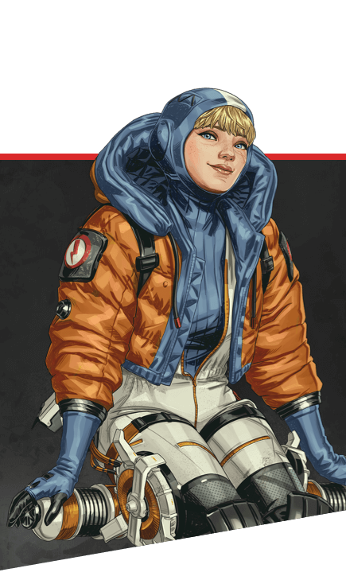
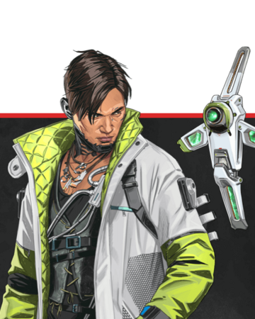
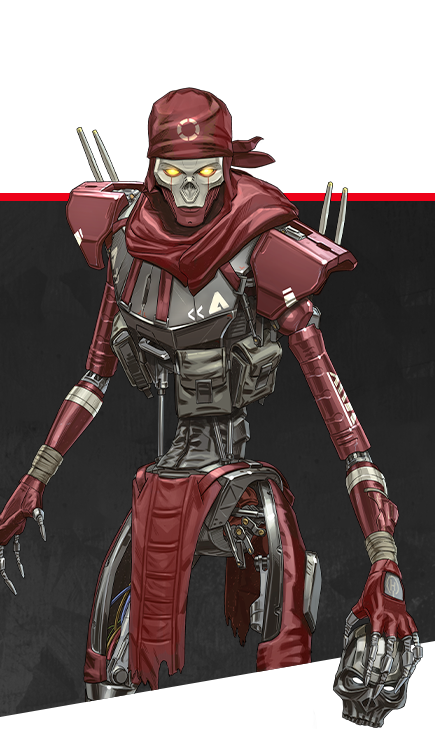
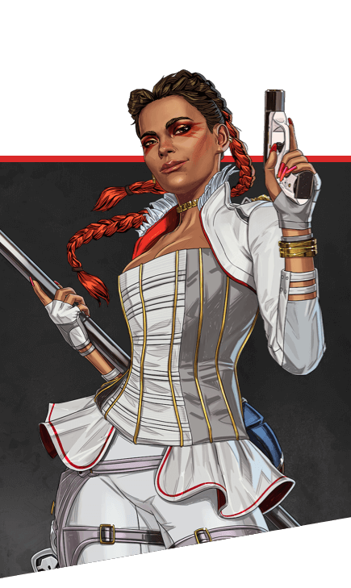
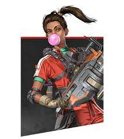
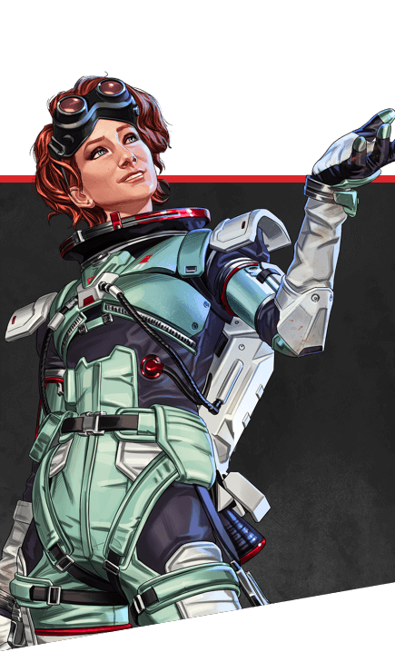
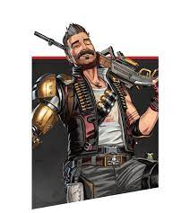
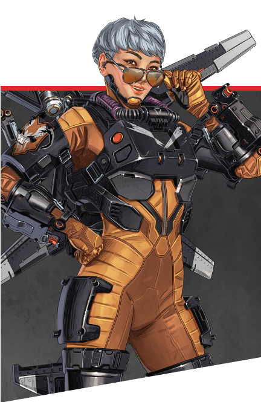
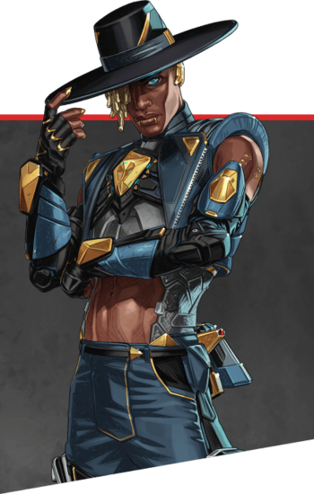
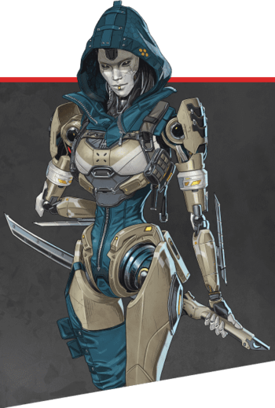
Maps
The four different maps in Apex play a large role in how you'll be playing
for the duration of that game.
Kings Canyon
The smallest of all the maps, and also the oldest.
with a lot of open space as well as constricting corridoors, varying heights
and unique places like Caustic Treatment to add special elements to the gameplay,
Kings Canyon is definitely #3 in my opinion. Good, but not better than the others.
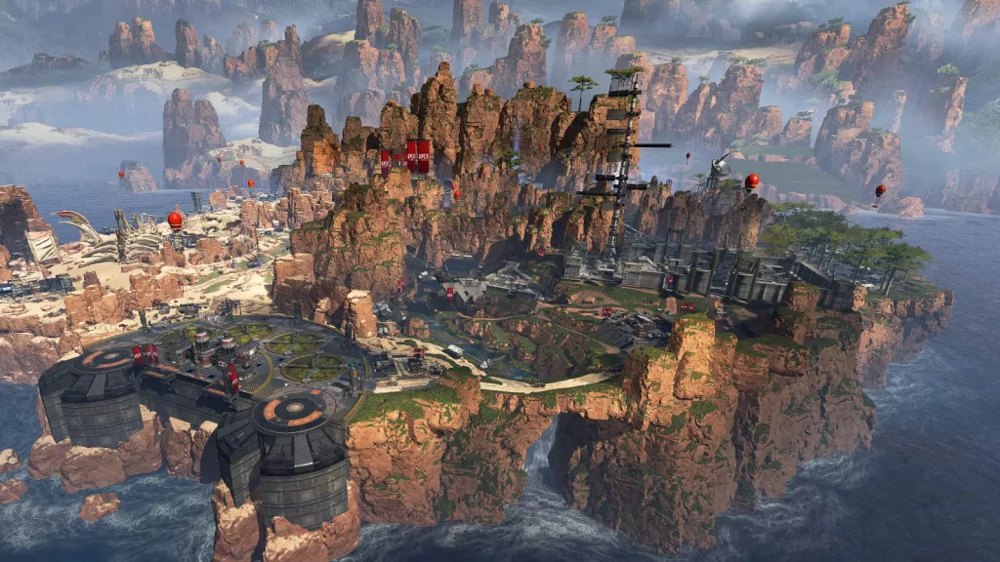
World's Edge
The Second map, added in season 4 is loved for many reasons, the use of buildings with vertical ziplines
offering easy escapes if you're good enough. Different places Look different, we have temperature ranging
from snowy to lava. And we have multiple high tier loot places to drop.
and for all of those reasons, that is why I hate World's Edge. It's home to the tryhards
you don't get to have fun on World's Edge. It's not casual, its over-competitive. #4 (in my opinion)
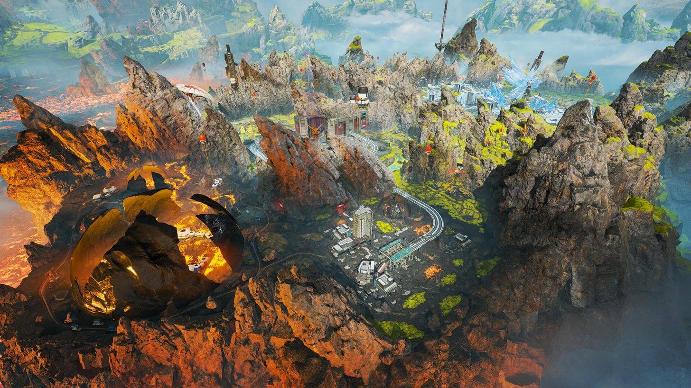
Olympus
The biggest map in Apex to date. Full of absolute tons of open space,
secrets, new game mechanics, height differences, interesting new places
and many choke points with the same amount if not more, different ways to move around.
Even though the map is very open, you can bypass all the trouble by taking a slightly different
slightly hidden route. It's fun, its a floating island. #2 (awesome but not the best)
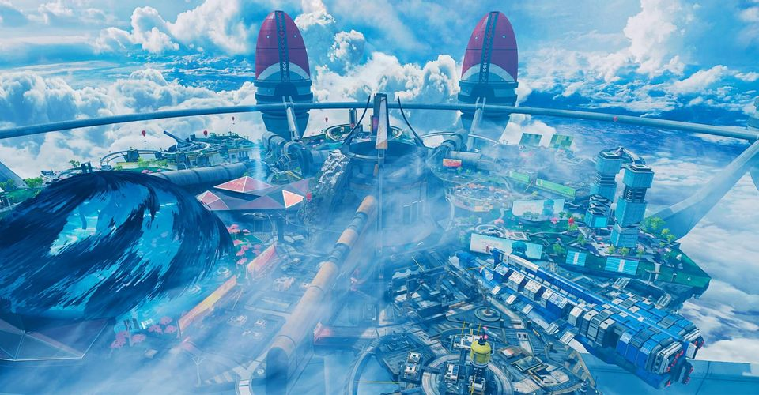
Storm Point
The newest map, with A.I creatures roaming around the map, with a huge attention to detail.
Large jungles, caves, cliffs and, interiors, exteriors, open spaces, long ziplines.
There are so many different things to look at, and it's still the second biggerst
map in the game behind Olympus. but what really makes it amazing in my mind are the
gravity cannons. I LOVE the gravity cannons. You step in and just get launched across
a canyon or above a village, it's so satifying :D #1 all the way.

All of these maps are designed to be played by anyone, using any legend
and playing with any playstyle. The heights balence with the depth, the open spaces
all have constricting corridoors and small rooms nearby.